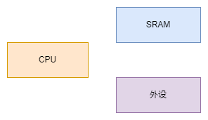
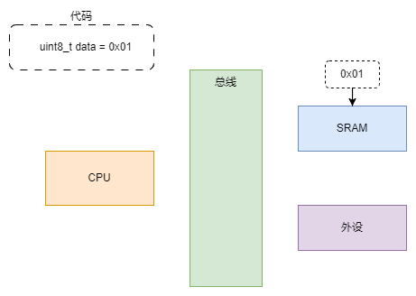
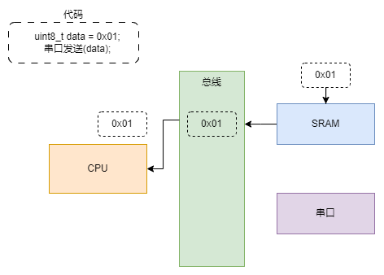
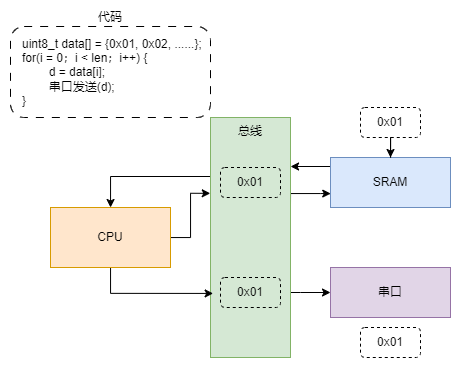
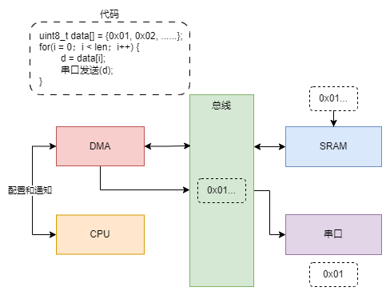

<!DOCTYPE lake>
<h2 data-lake-id="oONY6" id="oONY6"><span data-lake-id="u5d54cb72" id="u5d54cb72">基础概念</span></h2><h3 data-lake-id="VMulB" id="VMulB"><span data-lake-id="uafb0961b" id="uafb0961b">CPU</span></h3><p data-lake-id="uf784720c" id="uf784720c"><span data-lake-id="u8524a5b7" id="u8524a5b7">CPU（Central Processing Unit，中央处理单元）是计算机系统中的核心部件，也被称为处理器。它是计算机的大脑，负责执行指令、处理数据以及控制计算机的各种操作。CPU通常由多个核心组成，每个核心可以独立执行指令，从而提高计算机的处理能力。</span></p><h3 data-lake-id="dumiO" id="dumiO"><span data-lake-id="uaa503663" id="uaa503663">RAM</span></h3><p data-lake-id="ub3568ddc" id="ub3568ddc"><span data-lake-id="u458a7870" id="u458a7870">RAM（Random-Access Memory，随机存取存储器）是计算机中用于临时存储数据和程序的内存类型。RAM是计算机运行时存储数据的地方，其中包括操作系统、应用程序、用户数据等。与ROM（Read-Only Memory，只读存储器）不同，RAM中的数据可以被读取和写入，而ROM中的数据只能被读取。</span></p><h3 data-lake-id="ucA47" id="ucA47"><span data-lake-id="u43d9fc1d" id="u43d9fc1d">外设</span></h3><p data-lake-id="ue5f874d6" id="ue5f874d6"><span data-lake-id="u1dc8fb2f" id="u1dc8fb2f">外设（Peripheral Device）是指连接到计算机或微控制器的附加设备，包括片上外设(SPI，I2C, TIMER, USART), 以及芯片外部设备, 用于完成特定的功能或提供特定的输入/输出。外设可以是各种类型的硬件设备，例如定时器、显示器、存储设备、通信设备等。这些外设通过与主处理单元（如CPU）或微控制器的通信来实现数据交换和控制操作。</span></p><h3 data-lake-id="NIPe7" id="NIPe7"><span data-lake-id="ucb0c933d" id="ucb0c933d">程序运行过程</span></h3><p data-lake-id="u62c7f6b0" id="u62c7f6b0"><span data-lake-id="uc529abd9" id="uc529abd9">我们用一段伪代码来分析程序执行的过程：</span></p><span class="yuque-card-unsupported">[codeblock]</span><p data-lake-id="uc60a4d0b" id="uc60a4d0b"><span data-lake-id="u4cd9cd9f" id="u4cd9cd9f">看似简单的代码，其实以上包含了多个功能模块间的交互。</span></p><p data-lake-id="uada8cf81" id="uada8cf81"></p><ul list="u6a61c12d"><li data-lake-id="u50071d5c" fid="ue6bee2fe" id="u50071d5c"><span data-lake-id="ufe8944cd" id="ufe8944cd">cpu</span></li><li data-lake-id="uf22447a7" fid="ue6bee2fe" id="uf22447a7"><span data-lake-id="u3e7ceaae" id="u3e7ceaae">SRAM</span></li><li data-lake-id="ua215577f" fid="ue6bee2fe" id="ua215577f"><span data-lake-id="u7fc093d1" id="u7fc093d1">外设</span></li></ul><p data-lake-id="uf56623bf" id="uf56623bf"><span data-lake-id="u581c99df" id="u581c99df">​</span><br/></p><h2 data-lake-id="n4sCe" id="n4sCe"><span data-lake-id="u35d8b297" id="u35d8b297">ARM32程序</span></h2><h3 data-lake-id="yCk2e" id="yCk2e"><span data-lake-id="u0d5b005f" id="u0d5b005f">存储</span></h3><p data-lake-id="u9f55fbc7" id="u9f55fbc7"></p><p data-lake-id="u66eeac22" id="u66eeac22"><span data-lake-id="ufb3a9998" id="ufb3a9998">在ARM32架构中，程序运行过程中，我们定义的变量其实都是存储在SRAM中，其实就是我们所说的内存。</span></p><p data-lake-id="uaae3d647" id="uaae3d647"><span data-lake-id="uc115bff0" id="uc115bff0">我们的CPU去获取这个内存空间的数据，加载到CPU的缓存区(寄存器)中，执行CPU指令，指令操作加载的数据，程序就运行起来了。</span></p><h3 data-lake-id="VZZAj" id="VZZAj"><span data-lake-id="u81cf0f7a" id="u81cf0f7a">执行过程</span></h3><h4 data-lake-id="RLhGS" id="RLhGS"><span data-lake-id="ub1d30beb" id="ub1d30beb">取数据</span></h4><span class="yuque-card-unsupported">[codeblock]</span><p data-lake-id="u3f19c2e3" id="u3f19c2e3"></p><p data-lake-id="u0cab256c" id="u0cab256c"><span data-lake-id="ua51439e2" id="ua51439e2">cpu通过总线，向SRAM发送请求，获取数据</span></p><p data-lake-id="u35d51f11" id="u35d51f11"></p><p data-lake-id="u285665c7" id="u285665c7"><span data-lake-id="u9117a24b" id="u9117a24b">SRAM接收到请求，将数据通过总线传递给CPU，CPU将数据加载到自己的缓存中。</span></p><h4 data-lake-id="aifMA" id="aifMA"><span data-lake-id="ud2b2fb64" id="ud2b2fb64">执行操作</span></h4><span class="yuque-card-unsupported">[codeblock]</span><p data-lake-id="ucf99584b" id="ucf99584b"></p><p data-lake-id="uc3c5ee2a" id="uc3c5ee2a"><span data-lake-id="udf168944" id="udf168944">CPU通过总线，将数据交给串口，串口接收到数据后，将数据发出。</span></p><h3 data-lake-id="n53HB" id="n53HB"><span data-lake-id="ub25cc752" id="ub25cc752">流程总结</span></h3><ol list="ue8bb12e5"><li data-lake-id="ue3ab9977" fid="ubbcac6b0" id="ue3ab9977"><span data-lake-id="u01515bb7" id="u01515bb7">CPU执行过程中，通过总线，到SRAM中取数据</span></li><li data-lake-id="u1ad27892" fid="ubbcac6b0" id="u1ad27892"><span data-lake-id="u1be1eae6" id="u1be1eae6">CPU将取的数据，按照逻辑处理顺序进行执行</span></li><li data-lake-id="u4bc0b52e" fid="ubbcac6b0" id="u4bc0b52e"><span data-lake-id="ud407b34d" id="ud407b34d">逻辑中用到了外设部分，CPU会将对应的数据通过总线传递给外设</span></li></ol><p data-lake-id="u1dc66af6" id="u1dc66af6"><span data-lake-id="u759ff8df" id="u759ff8df">这里的每一份数据都是这么个操作流程。</span></p><p data-lake-id="u0effa97b" id="u0effa97b"><span data-lake-id="u2ffc7550" id="u2ffc7550">​</span><br/></p><h3 data-lake-id="lY8Hl" id="lY8Hl"><span data-lake-id="uaff448e2" id="uaff448e2">思考</span></h3><p data-lake-id="u09dd2dce" id="u09dd2dce"><span data-lake-id="ud15a5803" id="ud15a5803">大量的数据，这样传递是否存在问题。</span></p><p data-lake-id="uf7441f0a" id="uf7441f0a"></p><ul list="ub0506c3c"><li data-lake-id="ud64700cd" fid="u80353d38" id="ud64700cd"><span data-lake-id="u5e25f857" id="u5e25f857">数据量大时，cpu会一直在一条线上进行反复请求数据，获取数据，执行数据等一系列操作，会消耗cpu的执行时间片。</span></li></ul><h3 data-lake-id="JcM3Z" id="JcM3Z"><span data-lake-id="ue7dbb9ed" id="ue7dbb9ed">DMA概念</span></h3><p data-lake-id="ufa210259" id="ufa210259"><span data-lake-id="u43c7f5ec" id="u43c7f5ec">DMA （Direct Memory Access，直接存储器存取），是一种能够在无需CPU参与的情况下，将数据从一个地址空间复制到另一个地址空间高效的传输硬件机制。可以说，DMA就是CPU的高级代理，DMA大大减轻了CPU的负担。</span></p><p data-lake-id="ue1c29967" id="ue1c29967"></p><h2 data-lake-id="nuF4K" id="nuF4K"><span data-lake-id="ufa65d35c" id="ufa65d35c">ARM32的DMA</span></h2><h3 data-lake-id="PzoFM" id="PzoFM"><span data-lake-id="u532a8bfd" id="u532a8bfd">功能说明</span></h3><p data-lake-id="uc2869205" id="uc2869205"><span data-lake-id="u02cba5f3" id="u02cba5f3">GD32F4的DMA控制器有两个:</span><strong><span data-lake-id="u7021c656" id="u7021c656">DMA0，DMA1</span></strong><span data-lake-id="u33d9b56f" id="u33d9b56f">,共有</span><strong><span data-lake-id="u5ad74f6e" id="u5ad74f6e">16个通道</span></strong><span data-lake-id="u586443bf" id="u586443bf">，每个通道可以被分配给一个或多个特定的外设 进行数据传输。两个内置的总线仲裁器用来处理DMA请求的优先级问题。</span></p><h3 data-lake-id="IYB7j" id="IYB7j"><span data-lake-id="ud442dab2" id="ud442dab2">映射参考</span></h3><p data-lake-id="u9964b43e" id="u9964b43e"><span data-lake-id="ua5686820" id="ua5686820">DMA0如下图</span></p><p data-lake-id="ud9410f19" id="ud9410f19"></p><p data-lake-id="u06ae0940" id="u06ae0940"><span data-lake-id="ub158c18b" id="ub158c18b">DMA1如下图</span></p><p data-lake-id="u687dc817" id="u687dc817"></p><h3 data-lake-id="A2bgb" id="A2bgb"><span data-lake-id="ud33c0ff4" id="ud33c0ff4">传输方式</span></h3><p data-lake-id="u23ae790e" id="u23ae790e"><span data-lake-id="u50879463" id="u50879463">DMA三种传输方式 </span></p><p data-lake-id="u3b4beaa6" id="u3b4beaa6"><span data-lake-id="u4a5e97c6" id="u4a5e97c6">● 存储器到外设； </span></p><p data-lake-id="u3114fcbf" id="u3114fcbf"><span data-lake-id="u5f531deb" id="u5f531deb">● 外设到存储器； </span></p><p data-lake-id="u4a34692f" id="u4a34692f"><span data-lake-id="u702c976c" id="u702c976c">● 存储器到存储器（仅 DMA1 支持）；</span></p><p data-lake-id="u15fd5c55" id="u15fd5c55"><span data-lake-id="u4859e118" id="u4859e118">DMA的优先级：</span></p><p data-lake-id="ue7086480" id="ue7086480"><span data-lake-id="ufe2d2e70" id="ufe2d2e70">支持软件优先级（低、中、高、超高）和硬件优先级（通道号越低，优先级越高）。</span></p>